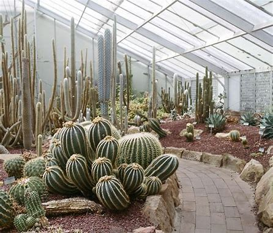
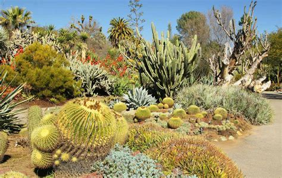

Cactus botanical gardens are remarkable places that focus on the beauty and diversity of cacti. These gardens are all about showcasing these unique, spiky, and drought-resistant succulent plants. When you visit, you step into a world where cacti take the spotlight, and you can learn and admire them up close.
The main purpose of cactus botanical gardens is to celebrate and protect the incredible variety of cacti found in nature. These plants have evolved to survive in some of the toughest conditions on Earth, like deserts and arid regions. The gardens act like living museums, allowing the public to explore and understand the biology, ecology, and importance of cacti.
One of the coolest things about cactus gardens is the wide range of cacti they showcase. You'll see saguaro cacti, the giants of the American Southwest, and charming prickly pear cacti with their distinctive shapes. These gardens often feature cacti from around the world, adding a global touch to the experience. Some cacti even surprise visitors with their vibrant and delicate flowers, a contrast to their tough exterior.Cactus botanical gardens are more than just places to learn; they also contribute to research and conservation.

Scientists study cacti to understand their growth patterns, adaptations, and roles in their ecosystems. This knowledge is crucial for preserving these plants in their natural homes, which are increasingly threatened by climate change and habitat loss. Conservation is a significant part of what cactus gardens do. Many of these gardens keep collections of rare and endangered cacti, acting as safe havens for these at-risk species. By growing and protecting them, these gardens help ensure that these cacti survive and don't disappear from their natural environments.
These gardens offer a peaceful and wondrous escape. The contrast between the rugged appearance of cacti and their delicate, colorful flowers creates an environment that feels both harsh and graceful. Visitors can explore the gardens, learn about desert ecosystems, and appreciate the resilience of these amazing plants. It's a place to discover the value of adaptation and the importance of protecting fragile environments.
Cactus botanical gardens are a fantastic opportunity to connect with a unique group of plants. Whether you're a budding botanist, a nature lover, or someone looking for a distinctive and serene experience, these gardens provide a captivating window into the world of cacti. They remind us of the importance of preserving these remarkable plants and the ecosystems they call home, inspiring us to cherish and safeguard the natural world.